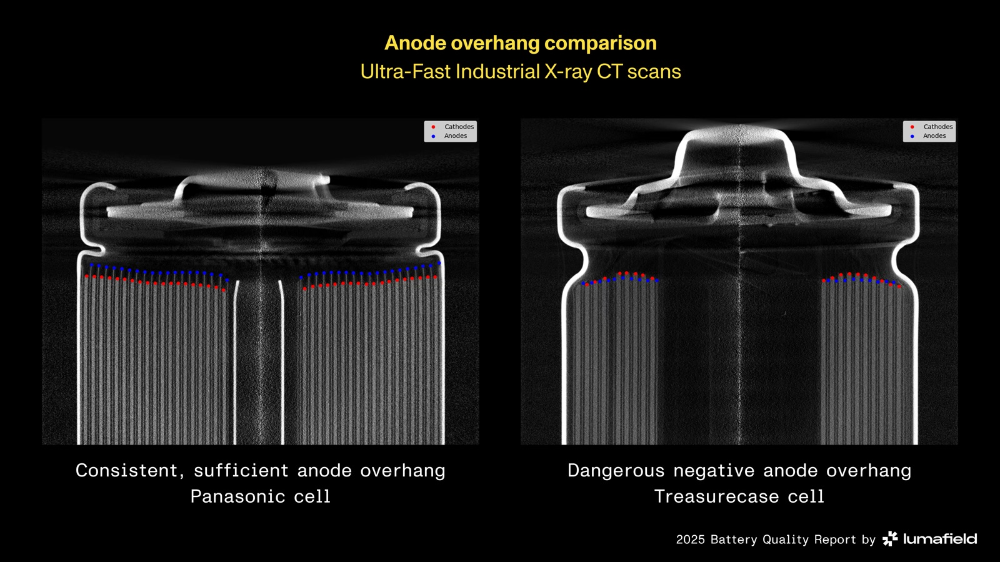

Executive Summary
Lumafield announced Quality Agent on September 3. It is an inspection system running on a foundation model trained on parts imaged by industrial X-ray CT, and the company calls it the first large-scale foundation model trained on industrial X-ray CT data. The part of the announcement worth attention is not a performance claim. It is where the ground truth gets written. Rather than checking parts against a predefined list of failure modes, the system learns the characteristics of known-good products and catches deviations from that state.
The evidence offered is a study of 1,054 lithium-ion battery cells, the same batch Lumafield scanned for its own battery quality report last September. The model separated cells from ten makers reliably, and along the way it turned up two brands sold under different names that were the same cell from the same OEM. Nobody had asked it to look for that. The announcement carries no detection accuracy, no false-positive rate, and no named customer.
Sections 1, 3 and 4 stay with what the press releases and the company's own reports actually say. Section 2 and the later part of section 5, where this launch is read as a question about labeling design, are this article's reading rather than the company's claim.
Key figures
Source: Lumafield, Lumafield Introduces Quality Agent press release (September 3, 2026)
1,054
Lithium-ion cells opened up
The model separated 18650 cells from ten brands by manufacturer, reliably
Hundreds of thousands
Real industrial parts behind the model
The training scale Bastian, the CTO, gave in his quoted statement. Volumetric records of this kind sit outside large commercial training sets, the company says
42% · 58%
Two numbers about the cost of quality
From Lumafield's own report, a survey of 210 quality decision-makers in North America. 42% spend over 5% of revenue on quality, and 58% think a quarter or more of the true cost goes unmeasured
Zero
Detection figures in the announcement
No accuracy, no recall, no false-positive rate, and no deployment named
An Inspection Model That Learned Good Parts
Quality Agent runs natively inside Voyager, Lumafield's cloud analysis platform. CT imagery is not the only thing it watches. The press release says it monitors every part across every available data stream: "X-ray and CT imagery, machine vision feeds, maintenance logs, and environmental sensors." The sentence describing how it works is short. Rather than checking parts against a predefined list of failure modes, it "learns the characteristics of known-good products and catches any deviation from that state, with no requirement that a defect be anticipated in advance."

The company points at today's inspection stack as the problem. Manufacturers rely on human visual inspection, surface-level automated optical inspection, and destructive cross-sectioning. But the failures that reach customers and trigger recalls are usually new ones, and the release calls them "unknown unknowns" that no inspection step was designed to detect. Those defects pass through automated production lines undetected until the product fails in the field.
The design for what follows a deviation is spelled out too. When Quality Agent identifies something new, it escalates the finding to a quality engineer with the supporting evidence needed to classify it as acceptable variation, a new control plan entry, or a problem requiring containment. The final call stays with a person. The release states plainly that the system "is designed to augment the powers of quality teams, not replace them." Andreas Bastian, co-founder and CTO, is quoted saying, "Quality teams don't need general-purpose AI retrofitted onto the factory floor; they need domain-specific intelligence built for the physical world."
Where Do You Write the Ground Truth?
This section is our reading, not the press release's. The weight of this launch sits on the labeling side rather than the inspection hardware side.
The usual way to turn quality inspection into a data problem is to build the list of failure modes first. You name cracks, porosity, inclusions, short shots, then gather examples for each name and label them. The method is cheap and its verdicts are unambiguous. You can tell a labeler exactly what to mark, and you can score the model class by class. It costs you one thing. The ceiling on what you can catch is the length of the list. A name that is not on the list is not in the data, and a model does not learn what is not in the data.
Writing the ground truth on the good side lifts that ceiling. The label is the characteristics of a known-good part, so you do not need the defect's name in advance, and a deviation nobody has seen still registers as a deviation. The bill arrives somewhere else. The purity of the batch you called good becomes the model's ceiling. If bad parts sit inside the good set, the model learns them as good. Deciding what counts as good, and rechecking whether that batch is still good after a line change or a material swap, becomes the new labeling work. And since the model emits a deviation signal rather than a verdict, the verdict stays with a person. That matches the part of the release about escalating findings to a quality engineer with supporting evidence.
A model flagging departures from normal while a person confirms them is not unique to the factory floor. The labeling pipeline that found new anomalies among 370,000 variable stars, which we covered in August, had the same shape. Instead of having people look at everything, it cut the labeling target down to one percent of the catalog and put human judgment inside that slice. The instrument differs. The question of where to spend the labeling budget sits in the same place.
What 1,054 Battery Cells Revealed
The study the release cites gets one sentence. Across 1,054 lithium-ion battery cells from 10 manufacturers, Lumafield's model separated cells by manufacturer reliably, and it went further and discovered that two brands were actually the same cells, produced by the same OEM and resold under different branding by a rewrap vendor.
That batch of cells had already been on the scanner once. For its battery quality report in September 2025, Lumafield bought at least 100 cells from each of ten brands, ending up with 1,054 cells in the 18650 format, and scanned every one of them on a CT system with a 130 kV microfocus source. The ten brands mixed OEMs such as Murata, Samsung and Panasonic with three rewrap brands and a set of low-cost and counterfeit labels from online marketplaces. The cell count and the brand count match this month's announcement exactly. The release calls all ten manufacturers, though three of them put their own wrapper on cells somebody else made.
Last year's report did not count defects with the foundation model. A Battery Analysis Module that locates electrode edges automatically did that work, and negative anode overhang appeared in 33 of the 1,054 cells scanned. All 33 came from low-cost or counterfeit brands, and within that segment the rate was roughly 1 in 13 cells, close to 8 percent. Across the 300 cells from the three OEM brands, the count was zero. Divide the same 33 by all 1,054 and you land in the 3 percent range, so the denominator moves the number by more than a factor of two. What this month's announcement adds from the same batch is not a defect rate. It is the manufacturer separation and the finding that two brands were one cell. Neither last year's report nor the making-of post about it mentions that.

It is worth splitting what this case proves from what it does not. Telling cells apart by manufacturer is closer to fingerprinting than to defect detection. It cannot stand in as evidence that the model catches some percentage of defects, and the release does not present it as a detection metric. It shows something else. A model that has learned what good looks like in enough detail can tell one maker's version of good from another's, and on that axis it answers a question nobody asked.
A defect class list cannot even pose that question. No entry on the list asks which factory this cell came from, so there is no axis to slice the data along. Move it to procurement and one more implication follows, and this one is our reading. A purchase that looked dual-sourced across two brands was leaning on a single factory. That is the size of the gap between verifying supply chain redundancy on paper and verifying it by cutting the part open.
Data You Cannot Scrape
The longest explanation in the announcement concerns what the model was trained on. The foundation model underlying Quality Agent is trained on Lumafield's corpus of industrial CT data, which the company describes as a volumetric record of manufactured products that general-purpose AI models cannot meaningfully interpret, because this type of data is not present in large commercial model training datasets. The person who put a number on the training volume is Bastian. In his quoted statement he says, "Quality Agent is powered by a foundation model trained on hundreds of thousands of real industrial parts."
That passage is a company explaining its own advantage, but from the data side it reads as something else. This is not a record you can pull off the web. The volumetric data for a single part exists only once a scanner has been pointed at that part. A company that sells the scanners and runs the analysis in its cloud accumulates those records, and only after they accumulate can a model sit on top of them. The places where data as an asset stops being a slogan usually look like this.
A week later, on September 10, Lumafield unveiled Saturn, a large-format industrial X-ray CT scanner. It handles parts up to 580 mm in diameter and 1,100 mm high, and its 225 kV source penetrates up to 100 mm of light metals and up to 25 mm of heavy metals. Engine blocks and large battery packs, the sort of object that never fit in lab equipment, are the target. There is no basis for tying the two announcements together causally. Neither release says Saturn's scan data feeds Quality Agent's training. One fact remains. The same company put out a model and a scanner within a week.

References
Press Releases
- 1.Lumafield. (2026). "Lumafield Introduces Quality Agent, a Physical AI Technology That Automates Defect Detection and Root Cause Analysis for Manufacturers." GlobeNewswire, September 3, 2026.
- 2.Lumafield. (2026). "Lumafield Unveils Saturn, Large-Format Industrial X-ray CT Scanner to Inspect Complex Assemblies and Dense Materials." GlobeNewswire, September 10, 2026.
Official Sources
- 3.Lumafield. "Quality Agent — Manufacturing AI." lumafield.com.
- 4.Lumafield. "Saturn." lumafield.com.
- 5.Lumafield. (2026). "Cost of Quality Report." Published May 19, 2026, with NewtonX (survey of 210 decision-makers in the US and Canada).
- 6.Lumafield. (2025). "Finding Hidden Risks in the Battery Supply Chain." September 2025.